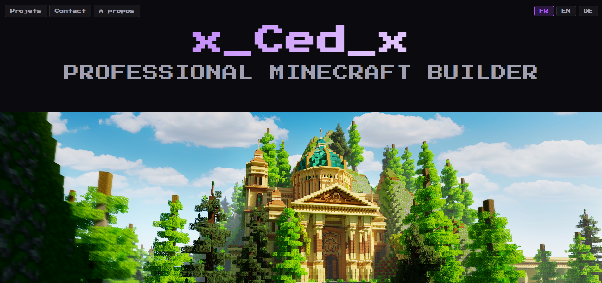
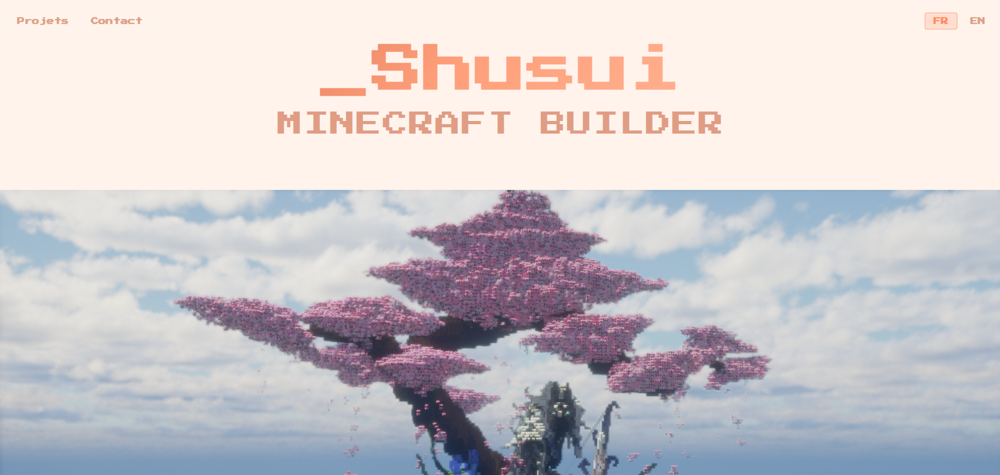
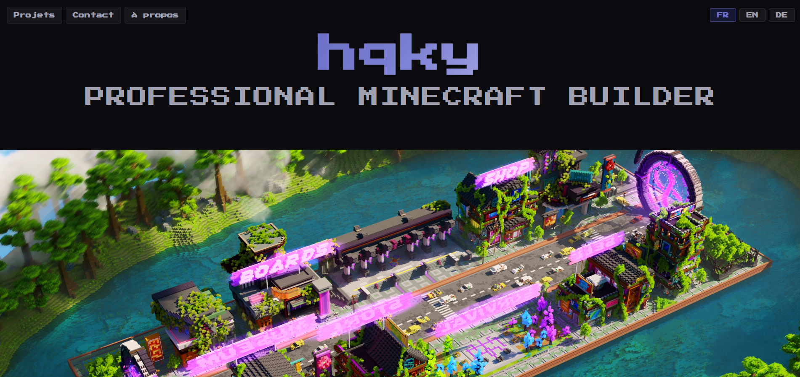

GitHub Pages · Portfolios · Équipe
Portfolios builders
Création de quatre sites web pour des particuliers : analyse des besoins, conception, mise en ligne sur GitHub Pages et structure de portfolio pour valoriser les réalisations de développeurs / builders.
01 — Sites vitrine
Quatre profils, quatre identités
Pour chaque particulier : recueil des besoins, conception de la vitrine et mise en ligne du service. Chaque site reprend une base technique commune tout en assumant une identité visuelle propre au profil builder.
Objectif : développer la présence en ligne de chaque profil avec un parcours clair (projets, stack, contact).
02 — Structure & visibilité
Portfolios builders & SEO
Mise en place d’une structure de portfolio pensée pour les développeurs / builders : sections projets, compétences et preuves de réalisation.
Optimisation SEO légère sur chaque site (balises, contenus, structure) pour améliorer la visibilité en ligne sans sur-ingénierie.

03 — _Shusui
Univers pastel & sakura
Vitrine aux tons pêche et rose : typo pixel, hero centré sur les builds et navigation bilingue FR / EN adaptée au profil.

04 — hqky
Thème sombre & builds urbains
Interface bleu nuit, mise en avant des créations modernes et bouton de réservation visible — identité plus contrastée que les autres profils.

05 — Mode projet & livraison
Équipe, déploiement et montée en compétences
Travail mené en mode projet : planification des tâches, suivi des objectifs et coordination des contributions de l’équipe. Mise à disposition de sites fonctionnels aux utilisateurs finaux, avec accompagnement au déploiement sur GitHub Pages.
Développement des compétences personnelles : organisation du travail, veille technique et gestion de l’environnement de production.
06 — Axes du projet
Catégories concernées
- Présence en ligne Développer la visibilité de chaque profil via une vitrine dédiée.
- Mode projet Planification, suivi des objectifs et coordination des contributions en équipe.
- Service utilisateurs Sites en ligne fonctionnels et accompagnement lors du déploiement.
- Dév. professionnel Organisation du travail, veille et gestion de l’environnement de production.